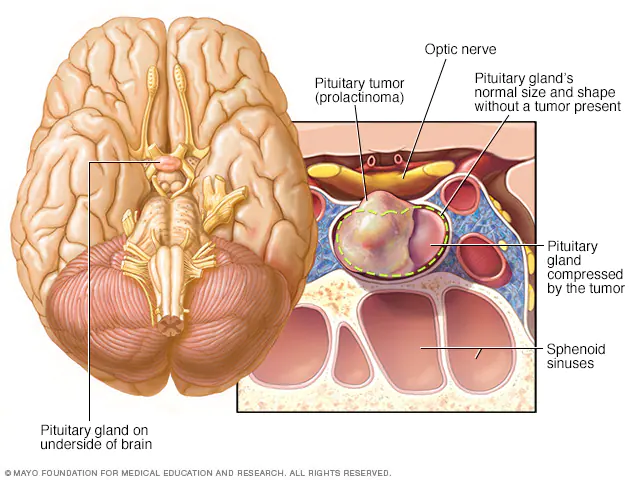

Prolactinoma

SYMPTOMS:
Women may have:
- Production of breast milk when not pregnant or nursing
-
Menstrual changes, such as irregular periods or no periods
-
Infertility
-
Reduced sex drive
-
Headaches
-
Vision problems
Men may have:
- Headaches
-
Vision problems
-
Impotence
-
Infertility
-
Decreased interest in sex
DIAGNOSIS
- Pregnancy test: This can rule out pregnancy for women of childbearing age.
-
An MRI scan helps us determine the size and location of any growth on the pituitary gland.
-
A neuro-ophthalmology exam may help if you are having vision problems.
TREATMENT
- Medication
Medications such as bromocriptine and cabergoline, taken as pills, can lower prolactin levels and shrink the tumor. We may use MRI or CT scans to make sure the tumor is shrinking.
- Surgery
If you need surgery, it’s important to see a highly experienced neurosurgeon such as the ones at OHSU. Removing a prolactinoma is complex. Our surgeons do more than 100 tumor surgeries in and around the pituitary gland each year. This high level of experience improves the chances of success.